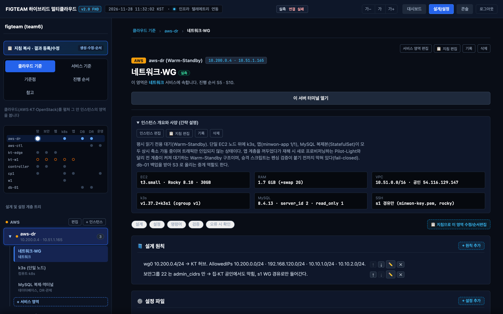
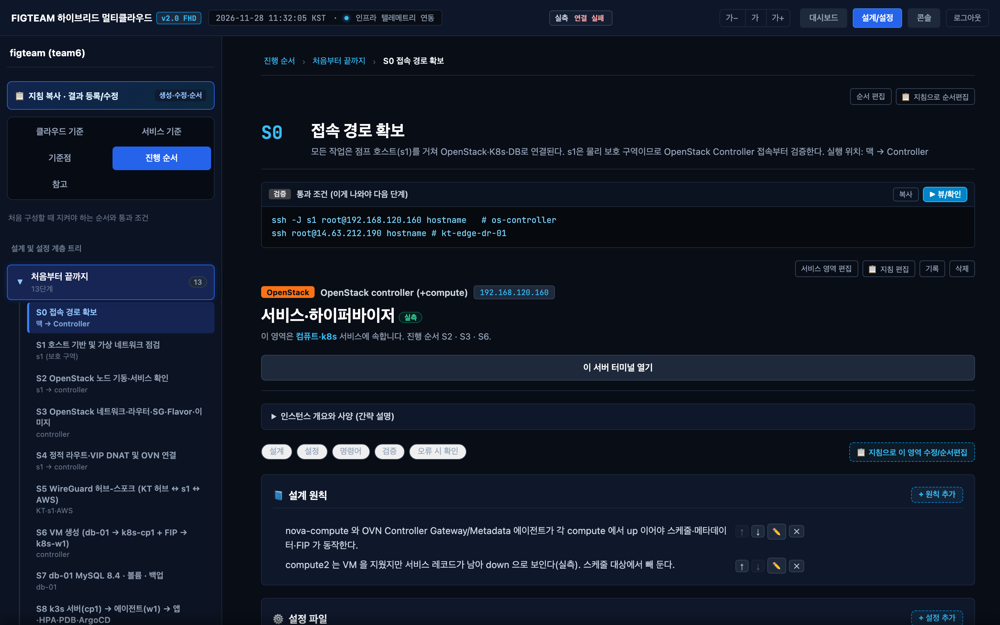
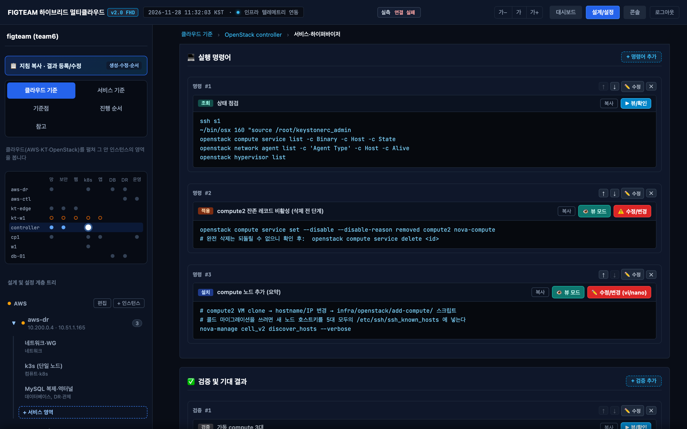
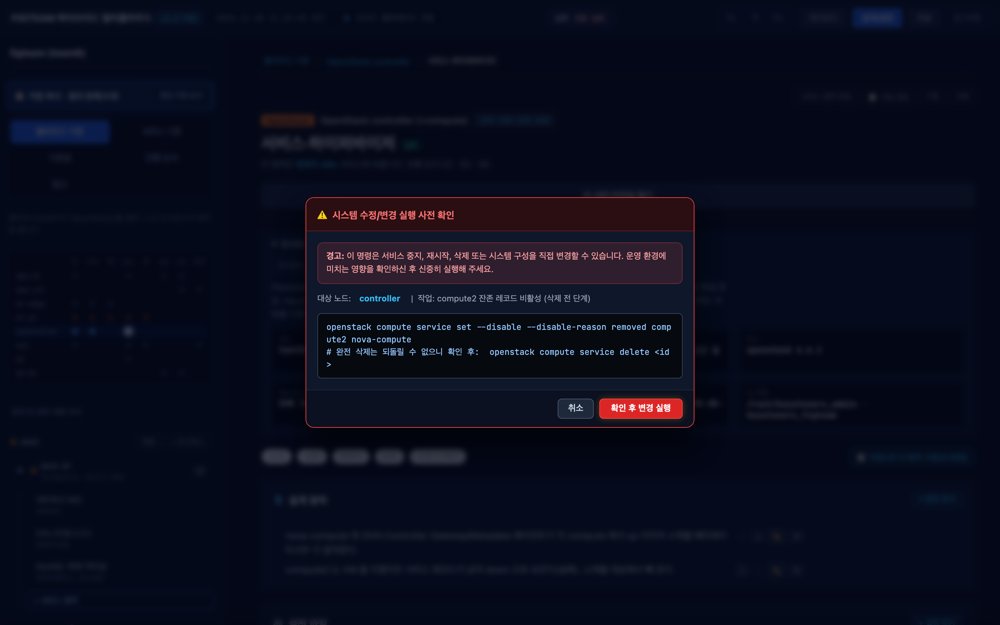
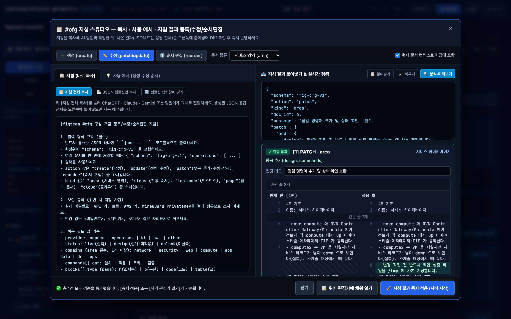
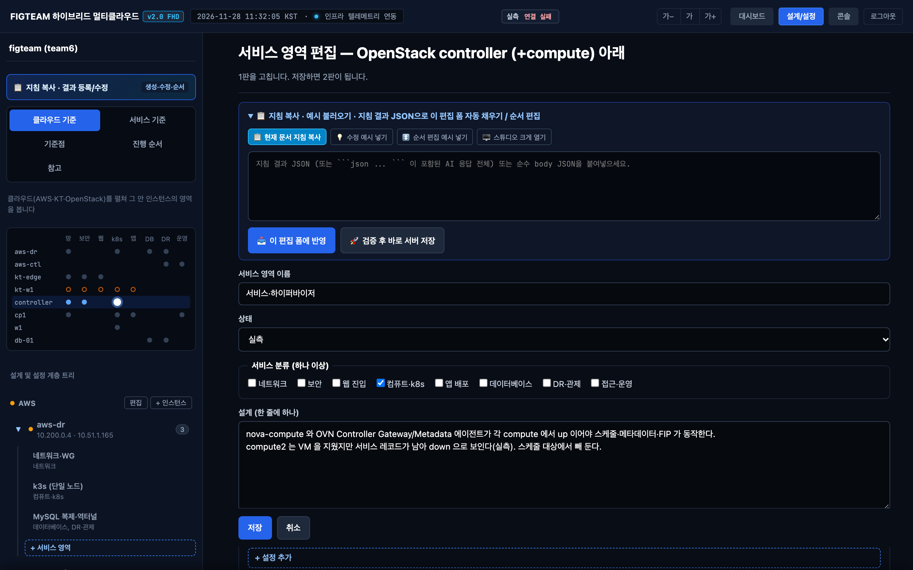

처음 열어도 바로 쓰는 #cfg 안내서
화면 위 번호 핀과 클릭 경로를 따라가면 설계 조회, 카드 편집, 안전 실행까지 바로 쓸 수 있습니다.
- 1상단 설계/설정 탭
- 2왼쪽 보기 기준 5개
- 3대분류·중분류 트리
- 4상단 이동경로 바

어디를 눌러 이동하나요
왼쪽 패널에서 대분류와 중분류를 고르면 오른쪽 본문에 상세가 열립니다.
-
상단 메뉴설계/설정
대시보드와 콘솔에서 구성 문서 화면으로 들어옵니다.
-
왼쪽 상단클라우드 기준보기 전환
클라우드, 서비스, 기준점, 진행 순서, 참고 중 고릅니다.
-
통합 트리클라우드인스턴스서비스 영역
한 화면 트리에서 접고 펼치며 대상 영역을 엽니다.
-
본문 상단 고정 바상위 경로 클릭
스크롤해도 상단에 남아 상위 단계로 바로 돌아갑니다.
-
왼쪽 보기 기준진행 순서
구축 단계 S0부터 S12까지 순서대로 보는 뷰로 바꿉니다.
-
진행 순서 트리S0~S12 단계 클릭
원하는 단계를 고르면 해당 서버 영역까지 아래에 이어집니다.
-
본문 우측 상단순서 편집지침으로 순서편집
단계 순서를 위아래로 바꾸거나 지침 결과로 일괄 재정렬합니다.
-
통과 조건 카드뷰/확인 실행
다음 단계로 넘어가기 전에 성공 기준 명령을 바로 확인합니다.

수정과 실행은 어떻게 나누나요
카드는 바로 추가·순서 이동하고, 터미널 실행은 조회와 변경을 색으로 나눕니다.

-
섹션 오른쪽 위+ 명령어 추가
설계, 설정, 명령어, 검증, 오류 섹션마다 개별 추가 팝업을 엽니다.
-
카드 상단 바위아래 순서수정삭제
버튼 한 번으로 항목 순서를 옮기거나 서버 문서를 바로 갱신합니다.
-
명령 헤더 우측복사뷰 모드실행
안전한 조회는 즉시 실행하고, 설정 편집과 변경은 경고를 먼저 띄웁니다.
-
상단 이동경로 바현재 영역 확인
작업 중인 클라우드, 인스턴스, 서비스 영역 이름을 고정 표시합니다.

-
사전 확인 창 상단변경 작업 안내
중지, 재시작, 설정 수정 명령은 즉시 실행을 막고 먼저 확인합니다.
-
경고 박스영향 범위 읽기
대상 노드와 서비스 영향 경고를 확인해 실수 실행을 막습니다.
-
실행 코드 창명령어 최종 점검
터미널에 전달될 전체 명령이나 편집 파일 경로를 확인합니다.
-
우측 하단 빨강 버튼확인 후 변경 실행
누르면 하단 터미널 창이 열리며 같은 노드 창을 재사용해 실행합니다.
지침 복사로 등록하고 순서 바꾸기
지침을 복사해 AI나 직접 작성한 결과를 붙여넣으면 Diff 비교 후 한 번에 저장합니다.
-
왼쪽 최상단 버튼유형·문서 종류 선택
생성, 수정, 순서 편집 중 하나와 대상 문서 종류를 고릅니다.
-
왼쪽 패널지침 전체 복사사용 예시
현재 문서 구조가 담긴 지침을 복사하거나 예시를 바로 불러옵니다.
-
오른쪽 입력창지침 결과 붙여넣기
AI 응답 전체나 JSON을 넣으면 비밀값 검사와 Diff가 자동 표시됩니다.
-
우측 하단지침 결과 즉시 적용
검증 통과를 확인한 뒤 서버에 저장하거나 위키 편집기로 엽니다.

-
편집 화면 상단지침 복사·채우기 펼치기
위키 전체 편집 화면 안에서도 접힌 지침 도우미를 바로 엽니다.
-
상단 도구 줄현재 문서 지침 복사예시 넣기
열려 있는 문서 전용 지침을 복사하거나 수정·순서 예시를 넣습니다.
-
인라인 입력칸JSON 결과 붙여넣기
전체 지침 JSON이나 순수 body JSON 모두 그대로 해석합니다.
-
아래 버튼이 편집 폼에 반영바로 저장
아래 입력 칸들만 자동으로 채운 뒤 검토하거나 즉시 서버에 저장합니다.

목적별 클릭 경로와 바로가기 URL
원하는 작업의 클릭 순서를 확인하고 URL을 누르면 해당 포털 화면으로 바로 이동합니다.
| 할 일 | 어디 클릭 > 어디 위치 | 바로가기 URL |
|---|---|---|
| 인스턴스별 설정 보기 | 상단 설계/설정 > 왼쪽 클라우드 기준 > 인스턴스 > 영역 | figteam.ktci5.kr/#cfg/inst |
| 서비스 기능별 모아보기 | 상단 설계/설정 > 왼쪽 서비스 기준 > 분야 > 서버 영역 | figteam.ktci5.kr/#cfg/svc |
| 전체 연결 구조 기준점 | 상단 설계/설정 > 왼쪽 기준점 > 전체 또는 클라우드 선택 | figteam.ktci5.kr/#cfg/zoom/forest/all |
| 단계별 구축 순서 확인 | 상단 설계/설정 > 왼쪽 진행 순서 > S0~S12 단계 | figteam.ktci5.kr/#cfg/step/all/S0 |
| 변수표 및 변경 이력 | 상단 설계/설정 > 왼쪽 참고 > 문서 또는 최근 변경 | figteam.ktci5.kr/#cfg/ref |
| 노드 웹 터미널 직접 접속 | 상단 콘솔 탭 > 대상 인스턴스 선택 또는 명령 실행 | figteam.ktci5.kr/#console |